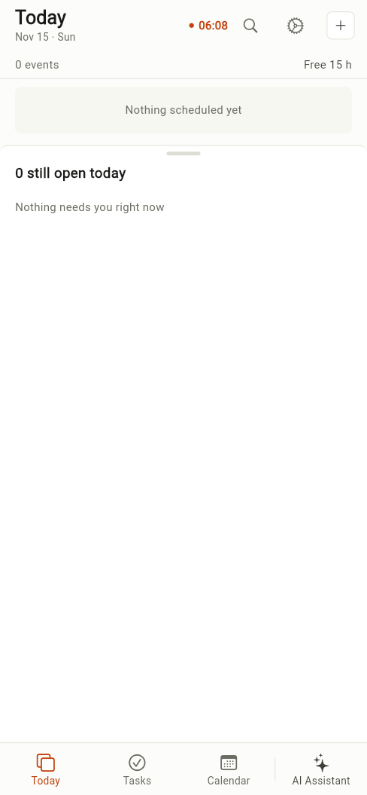
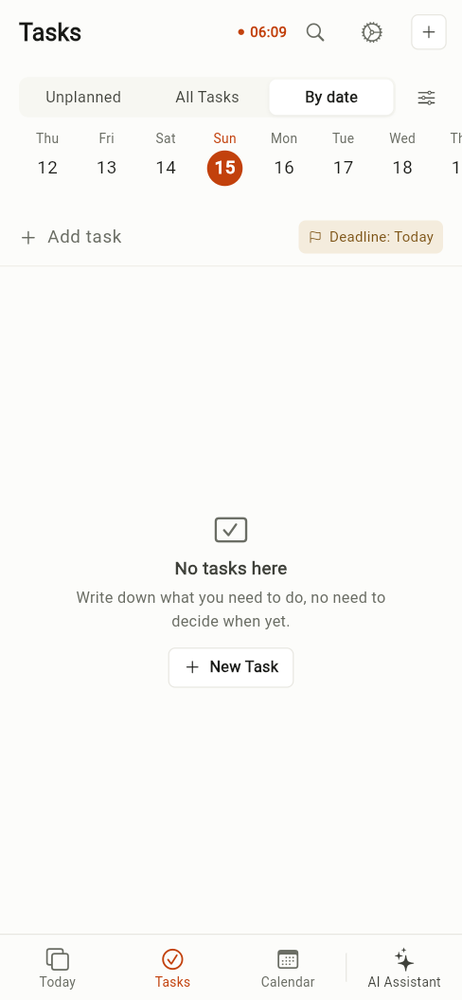
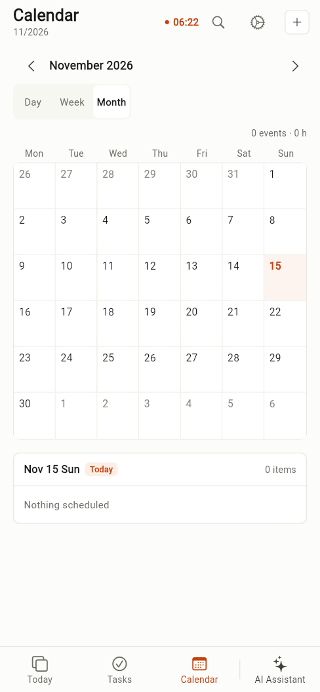
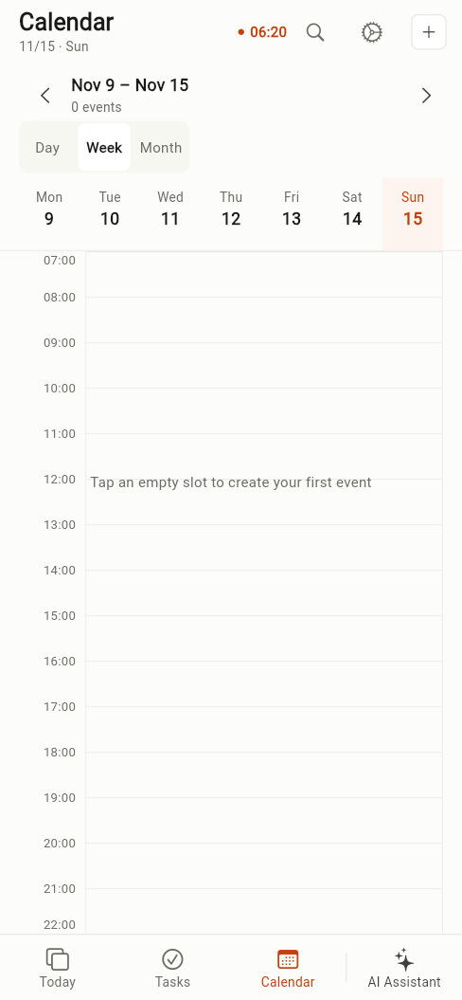
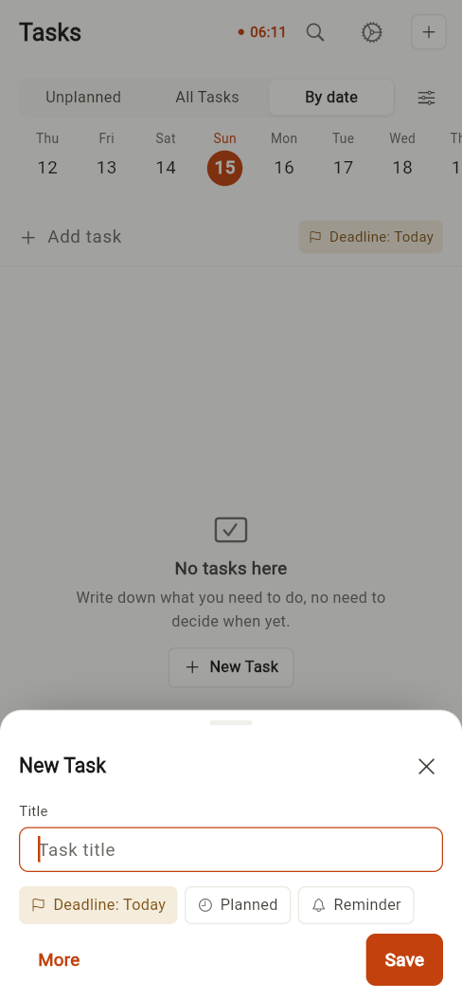
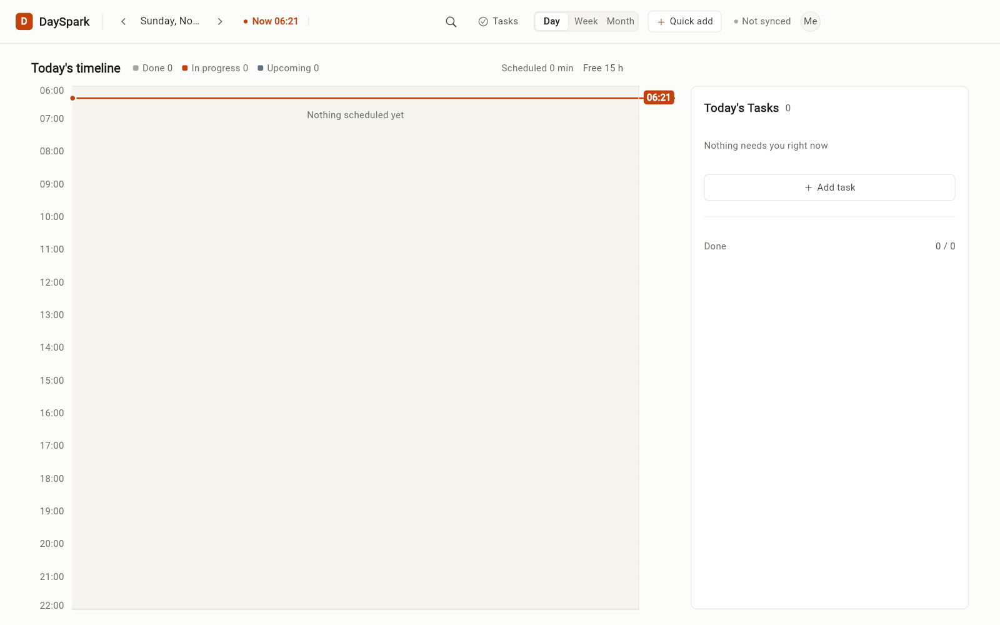
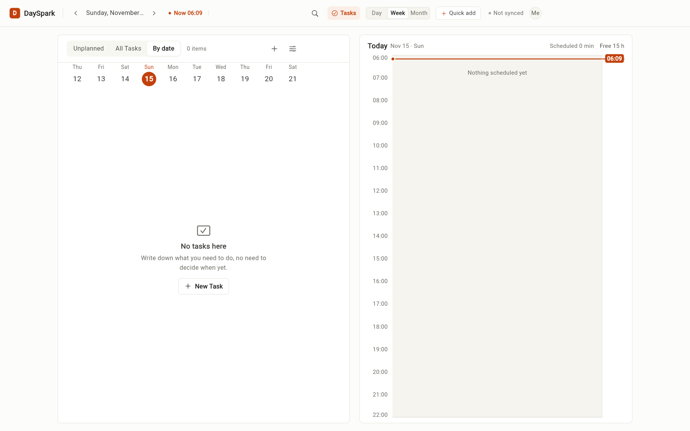
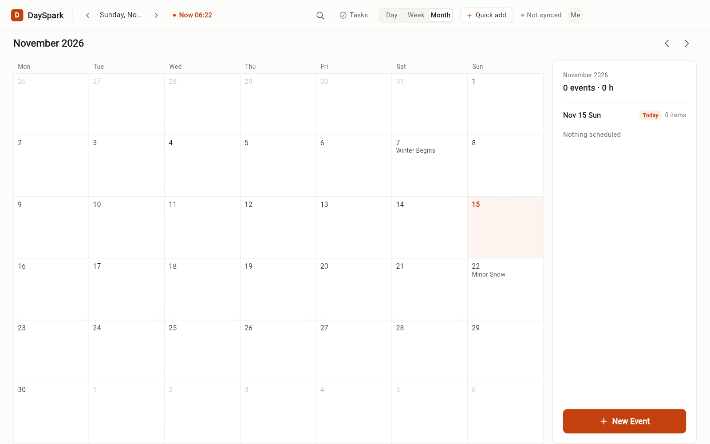

左 = 上一代 Direction C 的真实运行画面（main@9c7504b 构建出的 web 包，本机 127.0.0.1:8130 实拍，390 / 1280 宽）。 右 = 本轮 rebase 后的 A″ 原型（同一台机器、同一浏览器实时渲染，不是截图）。 评判标准只有一条：如果不知道发生过重设计，用户是否会认为这仍然是同一个 DaySpark。 注：App 数据库为空，左侧没有数据行；对照的是**组件语言**（顶栏、dock、行、勾选、分组头、卡片、日历网格、表单），不是数据。
顶栏同构：20/600 标题 + 11 副标题 + • 12/600 主色时刻 + 19px 图标；dock 56 高、21 图标、11/500 标签、选中主色。右侧新增的捕获行与未安排组沿用同一套行高与发丝。

行：min-h 52、左 12 右 16、20 圆环 + 1.5px ink-3、15/400 标题、12 ink-3 meta、行间无分隔线；分组头 30 高、5px 点 + 11/600、计数 11 faint。

日期条 = 17/600 + 12 ink-3 次行 + 14px chevron；行的 meta 里「计划」走 work 蓝灰、「截止」走 warn 暖金，与 App 的计划/截止语义同色。
月格：6 行等高、发丝网格、12.5/500 数字、今天 = primary-tint 格 + primary 数字、非本月数字 35% 透明、圆点 3.5px。

56 槽宽、10.5px 时刻标签右对齐、1px line 时线；块 = 6 圆角 + 1px line 边 + 3px 归属色左条 + 归属色 10% 填充；今天 = tinted 列头格。

sheet 18 圆角 + 1px line 顶边 + 36×4 grip；标题 17/600；标题输入 = surface 方框 + 1px line + 8 圆角 + 15/400；字段行 44 高 8 圆角；chips 32 高 6 圆角；底部 More（主色文字）+ Save（主色实心 44/8）。

顶栏 56 高、纸面底 + 1px line：22px 品牌方块 + 15/600 字标 + ‹ 日期 › + • 时刻 + 28 高三目的地 + 32 高「记一笔」+ 36 图标。内容 = surface 卡片（1px line、8 圆角）。

列表卡 + 右侧 320 详情卡；行 44 高、18 圆环、hover = surface-2、选中 = primary-soft；详情面字段行 13/1px line-soft。

月卡：星期头 11 ink-3、6 行等高发丝格、今天 = tinted 数字格；事件条 = 2px 归属色左条 + 11px 文本。
